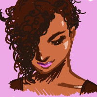
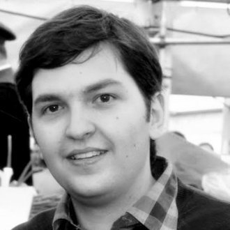
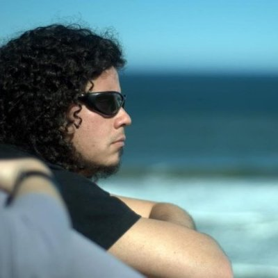
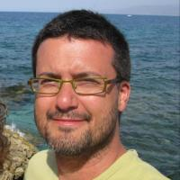

BioJS |
A practical introduction to BioJS
- a component library for creating visualisations in life sciences
Work on your own laptop (or team up!)
Follow with the demonstration and ask if something is unclear
Jessica Jordan: Web developer for BioJS at Earlham Institute, Norwich, UK
Materials provided by these BioJS contributors:
José M. Villaveces: PhD candidate at the Max Planck Institute of Biochemistry
Gustavo A. Salazar: Former Computer Science lecturer. Currently a software developer at Pfam, EBI, Cambridge, UK
Miguel Pignatelli: Software developer and visualisation coordinator @ Open Targets, EBI, Cambridge, UK
Jessica Jordan
@ Festival of Genomics Boston 2016